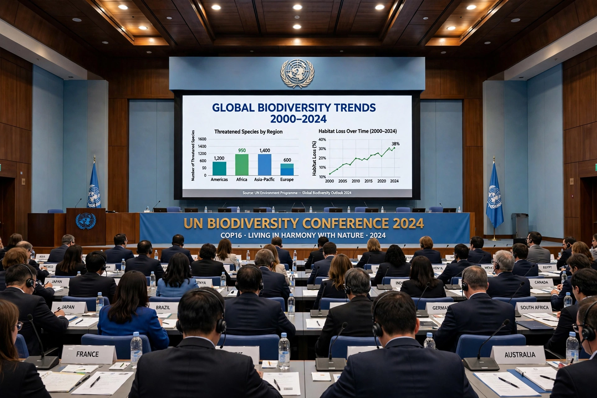

| Intergovernmental Science-Policy Platform on Biodiversity and Ecosystem Services | |
|---|---|
 | |
| Abbreviation | IPBES |
| Formation | 21 April 2012, Panama City |
| Type | Intergovernmental organisation |
| Headquarters | Bonn, Germany |
| Membership | More than 145 member states |
The Intergovernmental Science-Policy Platform on Biodiversity and Ecosystem Services (IPBES) is an intergovernmental organisation established to improve the interface between science and policy on issues of biodiversity and ecosystem services. It is often described as the biodiversity counterpart of the Intergovernmental Panel on Climate Change (IPCC). IPBES was formally established on 21 April 2012 in Panama City, Panama, and its secretariat is hosted by the United Nations campus in Bonn, Germany.
IPBES performs four main functions: (1) scientific assessments of the state of knowledge about biodiversity and ecosystem services at global, regional and thematic levels; (2) policy support, identifying tools and methodologies relevant to decision-makers; (3) capacity building, especially in developing countries; and (4) knowledge generation, identifying gaps that require new research. Its assessments are produced by hundreds of volunteer expert authors nominated by governments and stakeholders, and its summaries for policymakers are approved line by line by member governments in plenary session.
The 2016 Assessment Report on Pollinators, Pollination and Food Production documented the dependence of much global food production on animal pollinators and the threats they face. Four regional assessments (for Africa, the Americas, Asia-Pacific, and Europe and Central Asia) and a global thematic assessment of land degradation and restoration followed in 2018.
The landmark Global Assessment Report on Biodiversity and Ecosystem Services (2019), compiled by 145 expert authors from 50 countries drawing on some 15,000 scientific and government sources, concluded that nature is declining globally at rates unprecedented in human history, with around one million species threatened with extinction, many within decades. It identified the five main direct drivers of biodiversity loss, in descending order, as: changes in land and sea use; direct exploitation of organisms; climate change; pollution; and invasive alien species. The report's summary for policymakers was widely covered in the press and influenced the negotiations leading to the Kunming–Montreal Global Biodiversity Framework adopted in 2022. Later assessments addressed invasive alien species (2023) and the interlinkages among biodiversity, water, food and health (the "Nexus Assessment", 2024).